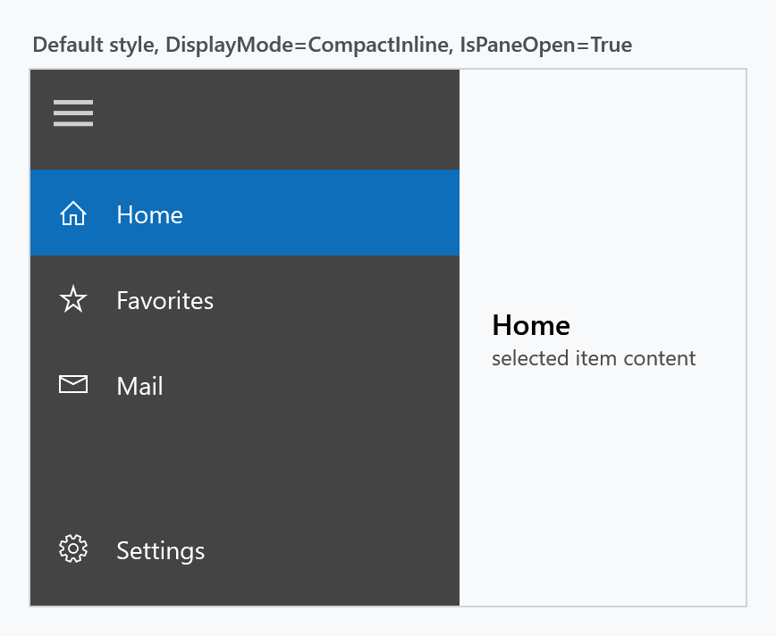
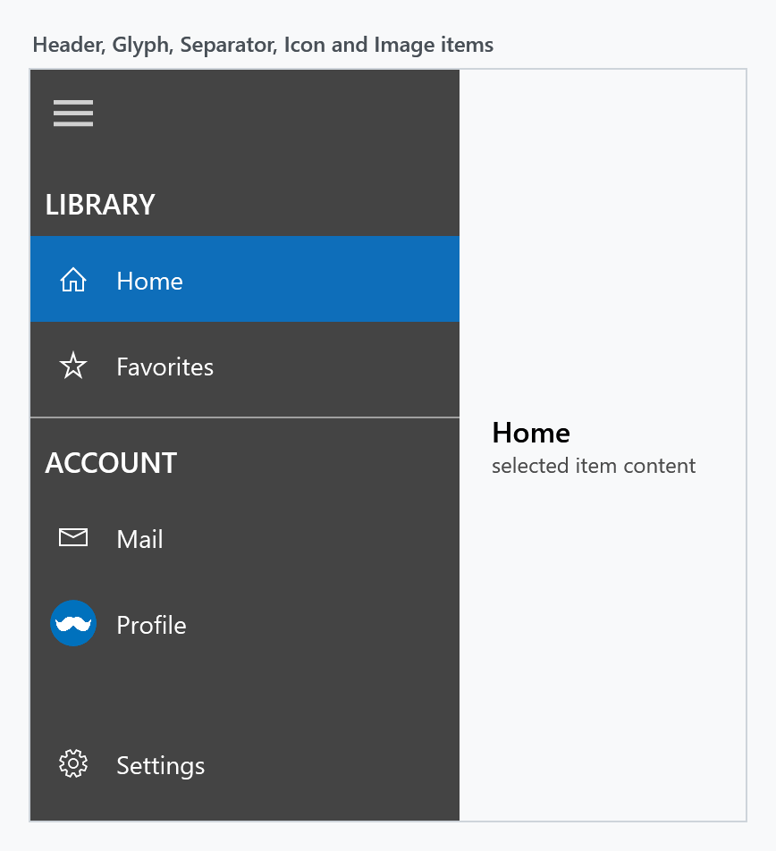
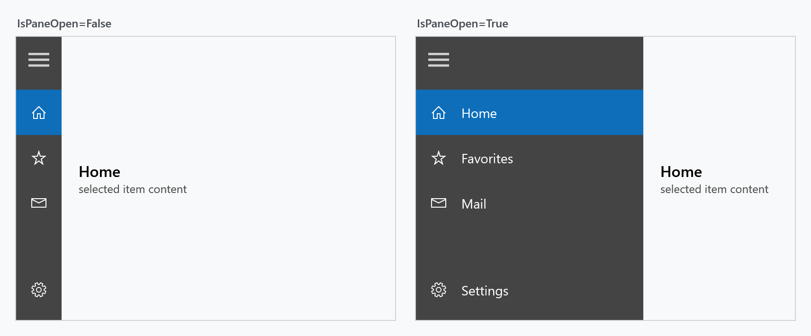
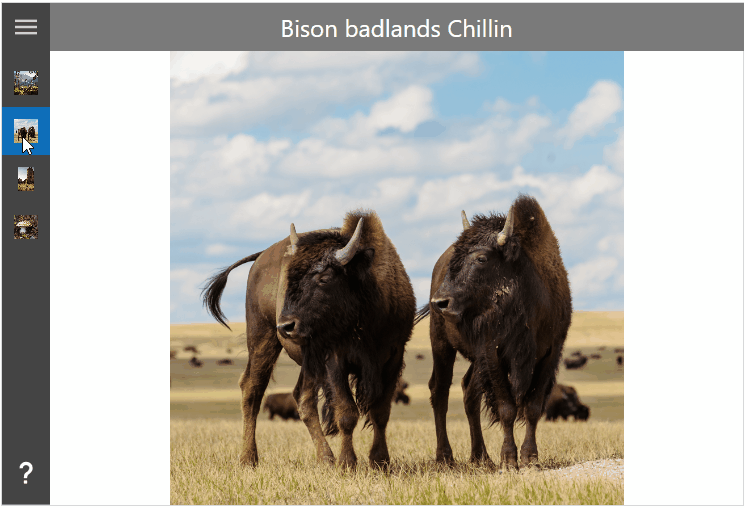
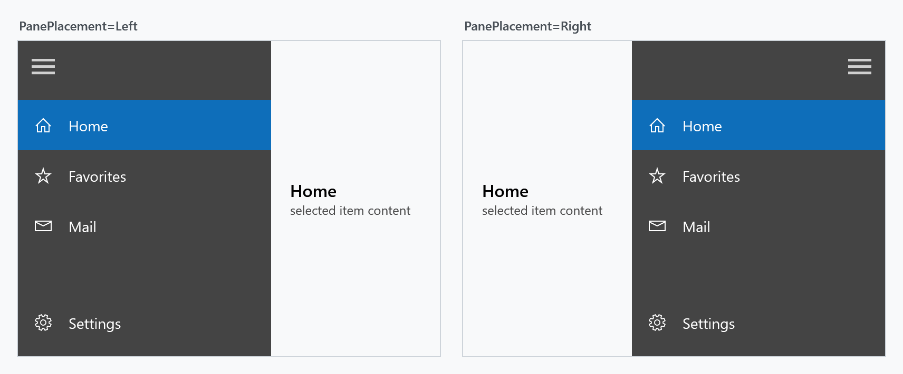
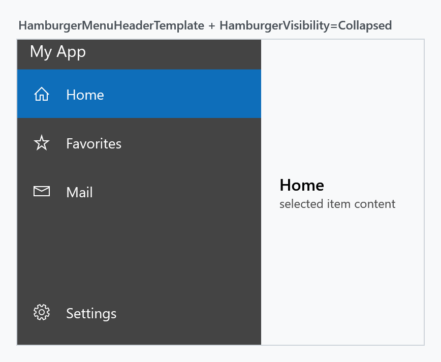
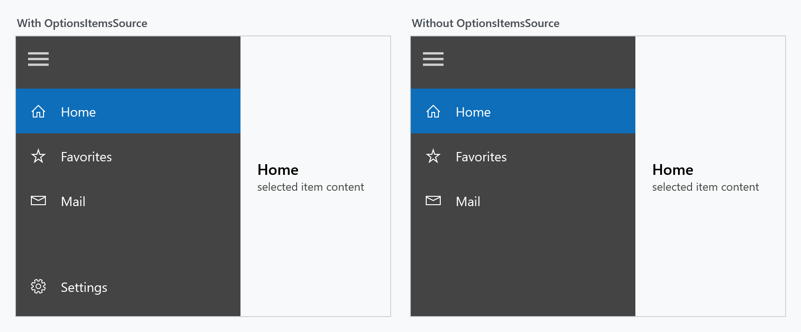
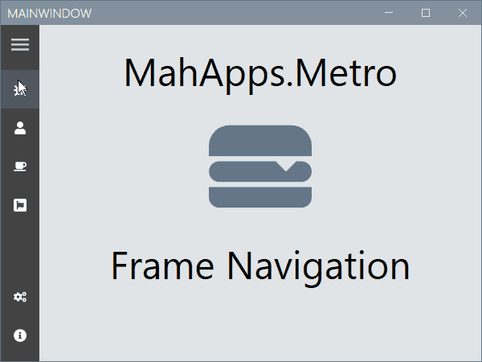
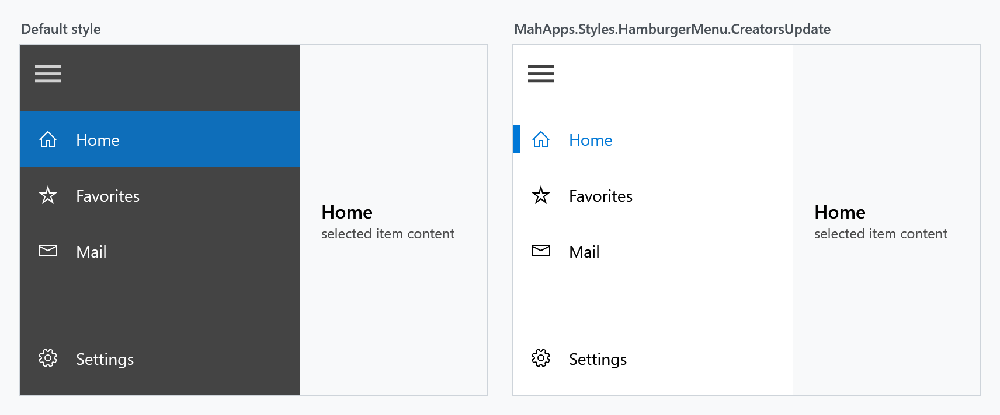

The HamburgerMenu is a navigation control: a list of destinations in a pane that collapses to a strip of icons, next to the content of whatever is selected. It wraps a SplitView for the pane behaviour and adds the item list, the hamburger button, an options list pinned to the bottom, and a content area.

Because the pane is a SplitView, DisplayMode, PanePlacement, IsPaneOpen, the four pane lengths, CanResizeOpenPane and ResizeThumbStyle behave exactly as described on the SplitView page — they are forwarded to it. Two defaults differ: DisplayMode starts at CompactInline instead of Overlay, and OpenPaneLength at 240 instead of 320.
Basic usage
Menu entries come from ItemsSource, usually a HamburgerMenuItemCollection written inline:
<mah:HamburgerMenu x:Name="Menu" IsPaneOpen="True">
<mah:HamburgerMenu.ItemsSource>
<mah:HamburgerMenuItemCollection>
<mah:HamburgerMenuGlyphItem Glyph="" Label="Home" />
<mah:HamburgerMenuGlyphItem Glyph="" Label="Favorites" />
</mah:HamburgerMenuItemCollection>
</mah:HamburgerMenu.ItemsSource>
<mah:HamburgerMenu.OptionsItemsSource>
<mah:HamburgerMenuItemCollection>
<mah:HamburgerMenuGlyphItem Glyph="" Label="Settings" />
</mah:HamburgerMenuItemCollection>
</mah:HamburgerMenu.OptionsItemsSource>
</mah:HamburgerMenu>
MahApps ships no DataTemplate for the menu item types. Without one the list renders the type name of each item, so an ItemTemplate — or a DataTemplate keyed by DataType, which is what lets a single menu mix item types — is effectively required. Bind the icon column to CompactPaneLength so the icons stay put when the pane opens and closes:
<DataTemplate DataType="{x:Type mah:HamburgerMenuGlyphItem}">
<Grid Height="48">
<Grid.ColumnDefinitions>
<ColumnDefinition Width="{Binding RelativeSource={RelativeSource AncestorType={x:Type mah:HamburgerMenu}}, Path=CompactPaneLength}" />
<ColumnDefinition />
</Grid.ColumnDefinitions>
<TextBlock Grid.Column="0"
HorizontalAlignment="Center"
VerticalAlignment="Center"
FontFamily="Segoe MDL2 Assets"
FontSize="16"
Text="{Binding Glyph}" />
<TextBlock Grid.Column="1"
VerticalAlignment="Center"
Text="{Binding Label}" />
</Grid>
</DataTemplate>
Menu items
All item types derive from HamburgerMenuItemBase, which is a Freezable — not a UIElement. They carry data, and the templates above turn them into visuals.
| Type | Adds | Purpose |
|---|---|---|
HamburgerMenuItemBase |
Tag, IsVisible |
base of all items |
HamburgerMenuItem |
Label, TargetPageType, Command, CommandParameter, CommandTarget, IsEnabled, ToolTip |
a selectable entry |
HamburgerMenuGlyphItem |
Glyph (string) |
entry with a font glyph |
HamburgerMenuIconItem |
Icon (object) |
entry with an arbitrary element as icon |
HamburgerMenuImageItem |
Thumbnail (ImageSource) |
entry with a picture |
HamburgerMenuHeaderItem |
Label |
a non-selectable group caption |
HamburgerMenuSeparatorItem |
— | a divider line |

Header and separator items are not selectable, but they do occupy an index. Watch out when setting SelectedIndex by hand: in the menu above index 0 is the LIBRARY header, so the first real entry is index 1.
<mah:HamburgerMenu.ItemsSource>
<mah:HamburgerMenuItemCollection>
<mah:HamburgerMenuHeaderItem Label="LIBRARY" />
<mah:HamburgerMenuGlyphItem Glyph="" Label="Home" />
<mah:HamburgerMenuGlyphItem Glyph="" Label="Favorites" />
<mah:HamburgerMenuSeparatorItem />
<mah:HamburgerMenuHeaderItem Label="ACCOUNT" />
<mah:HamburgerMenuIconItem Label="Mail">
<mah:HamburgerMenuIconItem.Icon>
<TextBlock FontFamily="Segoe MDL2 Assets" Text="" />
</mah:HamburgerMenuIconItem.Icon>
</mah:HamburgerMenuIconItem>
<mah:HamburgerMenuImageItem Label="Profile" Thumbnail="/assets/avatar.png" />
</mah:HamburgerMenuItemCollection>
</mah:HamburgerMenu.ItemsSource>
Items and OptionsItems expose the generated ItemCollection in code, the same way ItemsControl.Items does.
Opening and closing the pane
IsPaneOpen expands the pane; the hamburger button toggles it for you.


PanePlacement moves the whole pane to the other side:

VerticalScrollBarOnLeftSide puts the item list's scroll bar on the left, which reads better when the pane sits on the right.
The hamburger button and the pane header
HamburgerMenuHeaderTemplate fills the strip at the top of the pane, next to — or instead of — the hamburger button. Set HamburgerVisibility to Collapsed when your own toggle lives elsewhere.

<mah:HamburgerMenu HamburgerVisibility="Collapsed">
<mah:HamburgerMenu.HamburgerMenuHeaderTemplate>
<DataTemplate>
<TextBlock Margin="12 0"
VerticalAlignment="Center"
FontSize="16"
Foreground="{DynamicResource MahApps.Brushes.IdealForeground}"
Text="My App" />
</DataTemplate>
</mah:HamburgerMenu.HamburgerMenuHeaderTemplate>
</mah:HamburgerMenu>
HamburgerWidth, HamburgerHeight and HamburgerMargin size the button, HamburgerButtonStyle and HamburgerButtonTemplate restyle it, and HamburgerButtonName and HamburgerButtonHelpText feed AutomationProperties.Name and AutomationProperties.HelpText for screen readers.
Options
OptionsItemsSource fills a second list pinned to the bottom of the pane — the conventional place for settings or an account entry. It has its own OptionsItemTemplate, OptionsItemTemplateSelector, OptionsItemContainerStyle, SelectedOptionsItem, SelectedOptionsIndex, OptionsItemCommand and OptionsItemCommandParameter.

OptionsVisibility no longer does anything. It used to: the control template bound the options container's Visibility to it, and that worked up to and including MahApps.Metro 1.4.2. The binding was dropped in 1.5.0 when the pane's scroll bar behaviour was reworked (#2914) and never restored, so the property has been inert since. It is still there, still settable, and still ignored.
To leave the options block out, simply do not assign OptionsItemsSource — that is the difference shown above.
Selection, content and navigation
SelectedItem and SelectedIndex track the item list, SelectedOptionsItem and SelectedOptionsIndex the options list.
Setting SelectedIndex in XAML does not fill the content area. The control assigns Content only when an item is actually invoked, so a menu that starts on index 0 comes up with an empty content area. That is why the samples wire up ItemInvoked:
private void Menu_ItemInvoked(object sender, HamburgerMenuItemInvokedEventArgs e)
{
this.Menu.Content = e.InvokedItem;
}
If you would rather stay declarative, bind Content to the selection instead:
<mah:HamburgerMenu x:Name="Menu"
SelectedIndex="0"
Content="{Binding RelativeSource={RelativeSource Self}, Path=SelectedItem}" />
Either way a ContentTemplate renders whatever ends up in Content. The common pattern is to park the view for each entry in the item's Tag and unwrap it there:
<mah:HamburgerMenu.ContentTemplate>
<DataTemplate DataType="{x:Type mah:HamburgerMenuIconItem}">
<Grid Margin="20 0 10 0">
<Grid.RowDefinitions>
<RowDefinition Height="Auto" />
<RowDefinition Height="*" />
</Grid.RowDefinitions>
<TextBlock Grid.Row="0"
Margin="0 15 0 5"
FontFamily="{DynamicResource MahApps.Fonts.Family.Header}"
FontSize="{DynamicResource MahApps.Font.Size.Header}"
Text="{Binding Label}" />
<ContentControl Grid.Row="1" Content="{Binding Tag}" Focusable="False" />
</Grid>
</DataTemplate>
</mah:HamburgerMenu.ContentTemplate>
A complete navigation example
This sample goes further than the snippets above: the menu is bound to a view model, and a Frame inside the content area does the navigating, which also gives the window's back button a back stack to work with. The complete sample is available at this repository.

<controls:MetroWindow x:Class="MahAppsMetroHamburgerMenuNavigation.MainWindow"
xmlns="http://schemas.microsoft.com/winfx/2006/xaml/presentation"
xmlns:x="http://schemas.microsoft.com/winfx/2006/xaml"
xmlns:controls="http://metro.mahapps.com/winfx/xaml/controls"
xmlns:d="http://schemas.microsoft.com/expression/blend/2008"
xmlns:mc="http://schemas.openxmlformats.org/markup-compatibility/2006"
xmlns:viewModels="clr-namespace:MahAppsMetroHamburgerMenuNavigation.ViewModels"
Title="MainWindow"
Width="600"
Height="450"
GlowBrush="{DynamicResource MahApps.Brushes.AccentBase}"
WindowStartupLocation="CenterScreen"
WindowTransitionsEnabled="False"
mc:Ignorable="d">
<controls:MetroWindow.DataContext>
<viewModels:ShellViewModel />
</controls:MetroWindow.DataContext>
<controls:MetroWindow.LeftWindowCommands>
<controls:WindowCommands ShowSeparators="False">
<Button x:Name="GoBackButton"
Width="{Binding ElementName=HamburgerMenuControl, Path=CompactPaneLength}"
AutomationProperties.Name="Go back"
Click="GoBack_OnClick">
<controls:FontIcon AutomationProperties.Name="Go back icon"
FontSize="14"
Glyph="" />
</Button>
</controls:WindowCommands>
</controls:MetroWindow.LeftWindowCommands>
<controls:MetroWindow.Resources>
<DataTemplate x:Key="MenuItemTemplate" DataType="{x:Type viewModels:MenuItem}">
<Grid Height="48">
<Grid.ColumnDefinitions>
<ColumnDefinition Width="{Binding RelativeSource={RelativeSource AncestorType={x:Type controls:HamburgerMenu}}, Path=CompactPaneLength, Mode=OneWay}" />
<ColumnDefinition />
</Grid.ColumnDefinitions>
<ContentControl Grid.Column="0"
HorizontalAlignment="Center"
VerticalAlignment="Center"
Content="{Binding Icon}"
Focusable="False" />
<TextBlock Grid.Column="1"
VerticalAlignment="Center"
FontSize="16"
Text="{Binding Label}" />
</Grid>
</DataTemplate>
<Style BasedOn="{StaticResource {x:Type Frame}}" TargetType="{x:Type Frame}">
<Setter Property="Background" Value="{DynamicResource MahApps.Brushes.Accent4}" />
<Setter Property="ClipToBounds" Value="True" />
<Setter Property="ContentTemplate">
<Setter.Value>
<DataTemplate>
<controls:TransitioningContentControl Content="{Binding}"
RestartTransitionOnContentChange="True"
Transition="Custom">
<controls:TransitioningContentControl.CustomVisualStates>
<VisualState x:Name="CustomTransition">
<Storyboard>
<DoubleAnimationUsingKeyFrames BeginTime="00:00:00"
Storyboard.TargetName="CurrentContentPresentationSite"
Storyboard.TargetProperty="(UIElement.Opacity)">
<SplineDoubleKeyFrame KeyTime="00:00:00" Value="0" />
<SplineDoubleKeyFrame KeyTime="00:00:00.150" Value="1" />
</DoubleAnimationUsingKeyFrames>
<DoubleAnimationUsingKeyFrames BeginTime="00:00:00"
Storyboard.TargetName="CurrentContentPresentationSite"
Storyboard.TargetProperty="(UIElement.RenderTransform).(TransformGroup.Children)[3].(TranslateTransform.Y)">
<SplineDoubleKeyFrame KeyTime="00:00:00" Value="200" />
<SplineDoubleKeyFrame KeySpline="0.1, 0.9, 0.2, 1"
KeyTime="00:00:00.300"
Value="0" />
</DoubleAnimationUsingKeyFrames>
<DoubleAnimationUsingKeyFrames BeginTime="00:00:00"
Storyboard.TargetName="PreviousContentPresentationSite"
Storyboard.TargetProperty="(UIElement.Opacity)">
<SplineDoubleKeyFrame KeyTime="00:00:00" Value="0" />
</DoubleAnimationUsingKeyFrames>
</Storyboard>
</VisualState>
</controls:TransitioningContentControl.CustomVisualStates>
</controls:TransitioningContentControl>
</DataTemplate>
</Setter.Value>
</Setter>
</Style>
</controls:MetroWindow.Resources>
<controls:HamburgerMenu x:Name="HamburgerMenuControl"
DisplayMode="CompactInline"
IsPaneOpen="False"
ItemInvoked="HamburgerMenuControl_OnItemInvoked"
ItemTemplate="{StaticResource MenuItemTemplate}"
ItemsSource="{Binding Menu}"
OptionsItemTemplate="{StaticResource MenuItemTemplate}"
OptionsItemsSource="{Binding OptionsMenu}" />
</controls:MetroWindow>
Using this Frame object, you can navigate to your pages by using the following code.
using System;
using System.Linq;
using System.Windows;
using System.Windows.Navigation;
using MahApps.Metro.Controls;
using MenuItem = MahAppsMetroHamburgerMenuNavigation.ViewModels.MenuItem;
namespace MahAppsMetroHamburgerMenuNavigation
{
/// <summary>
/// Interaction logic for MainWindow.xaml
/// </summary>
public partial class MainWindow : MetroWindow
{
private readonly Navigation.NavigationServiceEx navigationServiceEx;
public MainWindow()
{
this.InitializeComponent();
this.navigationServiceEx = new Navigation.NavigationServiceEx();
this.navigationServiceEx.Navigated += this.NavigationServiceEx_OnNavigated;
this.HamburgerMenuControl.Content = this.navigationServiceEx.Frame;
// Navigate to the home page.
this.Loaded += (sender, args) => this.navigationServiceEx.Navigate(new Uri("Views/MainPage.xaml", UriKind.RelativeOrAbsolute));
}
private void HamburgerMenuControl_OnItemInvoked(object sender, HamburgerMenuItemInvokedEventArgs e)
{
if (e.InvokedItem is MenuItem menuItem && menuItem.IsNavigation)
{
this.navigationServiceEx.Navigate(menuItem.NavigationDestination);
}
}
private void NavigationServiceEx_OnNavigated(object sender, NavigationEventArgs e)
{
// select the menu item
this.HamburgerMenuControl.SelectedItem = this.HamburgerMenuControl
.Items
.OfType<MenuItem>()
.FirstOrDefault(x => x.NavigationDestination == e.Uri);
this.HamburgerMenuControl.SelectedOptionsItem = this.HamburgerMenuControl
.OptionsItems
.OfType<MenuItem>()
.FirstOrDefault(x => x.NavigationDestination == e.Uri);
// or when using the NavigationType on menu item
// this.HamburgerMenuControl.SelectedItem = this.HamburgerMenuControl
// .Items
// .OfType<MenuItem>()
// .FirstOrDefault(x => x.NavigationType == e.Content?.GetType());
// this.HamburgerMenuControl.SelectedOptionsItem = this.HamburgerMenuControl
// .OptionsItems
// .OfType<MenuItem>()
// .FirstOrDefault(x => x.NavigationType == e.Content?.GetType());
// update back button
this.GoBackButton.Visibility = this.navigationServiceEx.CanGoBack ? Visibility.Visible : Visibility.Collapsed;
}
private void GoBack_OnClick(object sender, RoutedEventArgs e)
{
this.navigationServiceEx.GoBack();
}
}
}
The MenuItem is derived from the HamburgerMenuIconItem class and adds the NavigationDestination and NavigationType properties for this navigation sample.
using System;
using System.Windows;
using MahApps.Metro.Controls;
namespace MahAppsMetroHamburgerMenuNavigation.ViewModels
{
public class MenuItem : HamburgerMenuIconItem
{
public static readonly DependencyProperty NavigationDestinationProperty = DependencyProperty.Register(
nameof(NavigationDestination), typeof(Uri), typeof(MenuItem), new PropertyMetadata(default(Uri)));
public Uri NavigationDestination
{
get => (Uri)this.GetValue(NavigationDestinationProperty);
set => this.SetValue(NavigationDestinationProperty, value);
}
public static readonly DependencyProperty NavigationTypeProperty = DependencyProperty.Register(
nameof(NavigationType), typeof(Type), typeof(MenuItem), new PropertyMetadata(default(Type)));
public Type NavigationType
{
get => (Type)this.GetValue(NavigationTypeProperty);
set => this.SetValue(NavigationTypeProperty, value);
}
public bool IsNavigation => this.NavigationDestination != null;
}
}
The ShellViewModel defines the Items and OptionsItems for the HamburgerMenu. The BindableBase class implements the INotifyPropertyChanged with a helper method SetProperty. This sample uses the IconPacks NuGet package, so you need to add this to your project.
using System;
using System.Collections.ObjectModel;
using MahApps.Metro.IconPacks;
using MahAppsMetroHamburgerMenuNavigation.Mvvm;
using MahAppsMetroHamburgerMenuNavigation.Views;
namespace MahAppsMetroHamburgerMenuNavigation.ViewModels
{
public class ShellViewModel : BindableBase
{
private static readonly ObservableCollection<MenuItem> AppMenu = new ObservableCollection<MenuItem>();
private static readonly ObservableCollection<MenuItem> AppOptionsMenu = new ObservableCollection<MenuItem>();
public ObservableCollection<MenuItem> Menu => AppMenu;
public ObservableCollection<MenuItem> OptionsMenu => AppOptionsMenu;
public ShellViewModel()
{
// Build the menus
this.Menu.Add(new MenuItem()
{
Icon = new PackIconFontAwesome() { Kind = PackIconFontAwesomeKind.BugSolid },
Label = "Bugs",
NavigationType = typeof(BugsPage),
NavigationDestination = new Uri("Views/BugsPage.xaml", UriKind.RelativeOrAbsolute)
});
this.Menu.Add(new MenuItem()
{
Icon = new PackIconFontAwesome() { Kind = PackIconFontAwesomeKind.UserSolid },
Label = "User",
NavigationType = typeof(UserPage),
NavigationDestination = new Uri("Views/UserPage.xaml", UriKind.RelativeOrAbsolute)
});
this.Menu.Add(new MenuItem()
{
Icon = new PackIconFontAwesome() { Kind = PackIconFontAwesomeKind.CoffeeSolid },
Label = "Break",
NavigationType = typeof(BreakPage),
NavigationDestination = new Uri("Views/BreakPage.xaml", UriKind.RelativeOrAbsolute)
});
this.Menu.Add(new MenuItem()
{
Icon = new PackIconFontAwesome() { Kind = PackIconFontAwesomeKind.FontAwesomeBrands },
Label = "Awesome",
NavigationType = typeof(AwesomePage),
NavigationDestination = new Uri("Views/AwesomePage.xaml", UriKind.RelativeOrAbsolute)
});
this.OptionsMenu.Add(new MenuItem()
{
Icon = new PackIconFontAwesome() { Kind = PackIconFontAwesomeKind.CogsSolid },
Label = "Settings",
NavigationType = typeof(SettingsPage),
NavigationDestination = new Uri("Views/SettingsPage.xaml", UriKind.RelativeOrAbsolute)
});
this.OptionsMenu.Add(new MenuItem()
{
Icon = new PackIconFontAwesome() { Kind = PackIconFontAwesomeKind.InfoCircleSolid },
Label = "About",
NavigationType = typeof(AboutPage),
NavigationDestination = new Uri("Views/AboutPage.xaml", UriKind.RelativeOrAbsolute)
});
}
}
}
The NavigationServiceEx is a helper class with a Frame to allow easy navigation in this sample.
using System;
using System.Windows.Controls;
using System.Windows.Navigation;
namespace MahAppsMetroHamburgerMenuNavigation.Navigation
{
public class NavigationServiceEx
{
public event NavigatedEventHandler Navigated;
public event NavigationFailedEventHandler NavigationFailed;
private Frame _frame;
public Frame Frame
{
get
{
if (this._frame == null)
{
this._frame = new Frame() { NavigationUIVisibility = NavigationUIVisibility.Hidden };
this.RegisterFrameEvents();
}
return this._frame;
}
set
{
this.UnregisterFrameEvents();
this._frame = value;
this.RegisterFrameEvents();
}
}
public bool CanGoBack => this.Frame.CanGoBack;
public bool CanGoForward => this.Frame.CanGoForward;
public void GoBack() => this.Frame.GoBack();
public void GoForward() => this.Frame.GoForward();
public bool Navigate(Uri sourcePageUri, object extraData = null)
{
if (this.Frame.CurrentSource != sourcePageUri)
{
return this.Frame.Navigate(sourcePageUri, extraData);
}
return false;
}
public bool Navigate(Type sourceType)
{
if (this.Frame.NavigationService?.Content?.GetType() != sourceType)
{
return this.Frame.Navigate(Activator.CreateInstance(sourceType));
}
return false;
}
private void RegisterFrameEvents()
{
if (this._frame != null)
{
this._frame.Navigated += this.Frame_Navigated;
this._frame.NavigationFailed += this.Frame_NavigationFailed;
}
}
private void UnregisterFrameEvents()
{
if (this._frame != null)
{
this._frame.Navigated -= this.Frame_Navigated;
this._frame.NavigationFailed -= this.Frame_NavigationFailed;
}
}
private void Frame_NavigationFailed(object sender, NavigationFailedEventArgs e) => this.NavigationFailed?.Invoke(sender, e);
private void Frame_Navigated(object sender, NavigationEventArgs e) => this.Navigated?.Invoke(sender, e);
}
}
ContentTransition picks the animation the underlying TransitioningContentControl plays on every content change: Default, Normal, Up, Down, Left, LeftReplace, Right or RightReplace.
Instead of handling events you can let each item carry a Command, or give the menu a single ItemCommand (and OptionsItemCommand) that receives the clicked item.
Styling
MahApps ships two styles for the control:
| Style | Look |
|---|---|
MahApps.Styles.HamburgerMenu |
the default: dark pane, selected entry filled with the accent colour |
MahApps.Styles.HamburgerMenu.CreatorsUpdate |
pane in the theme background, selection marked by an accent bar (ShowSelectionIndicator="True") |

ShowSelectionIndicator alone turns the indicator on for the default style too. PaneBackground and PaneForeground recolour the pane, PaneMargin and PaneHeaderMargin adjust its spacing.
Per-row appearance is governed by ItemContainerStyle, HeaderItemContainerStyle, SeparatorItemContainerStyle and OptionsItemContainerStyle; all target ListBoxItem. Base your own on the MahApps ones so you keep the selection and hover brushes, which come from ItemHelper attached properties:
<Style x:Key="MyItemStyle"
BasedOn="{StaticResource MahApps.Styles.ListBoxItem.HamburgerMenuItem}"
TargetType="{x:Type ListBoxItem}">
<Setter Property="mah:ItemHelper.SelectedForegroundBrush" Value="{DynamicResource MahApps.Brushes.AccentBase}" />
<Setter Property="mah:ItemHelper.HoverBackgroundBrush" Value="{DynamicResource MahApps.Brushes.Gray.SemiTransparent}" />
</Style>
Material Design ripple
The demo application also ships a variant that borrows the ripple effect from MaterialDesignThemes. The trick is a container style whose template puts a materialDesign:Ripple where the ContentPresenter normally goes:
<Style x:Key="MahApps.Styles.ListBoxItem.HamburgerMenuItem.Ripple"
BasedOn="{StaticResource MahApps.Styles.ListBoxItem.HamburgerMenuItem}"
TargetType="{x:Type ListBoxItem}">
<Setter Property="Template">
<Setter.Value>
<ControlTemplate TargetType="{x:Type ListBoxItem}">
<!-- ... border and selection indicator ... -->
<materialDesign:Ripple Padding="{TemplateBinding Padding}"
Content="{TemplateBinding Content}"
ContentTemplate="{TemplateBinding ContentTemplate}"
Feedback="{DynamicResource MahApps.Brushes.Gray.MouseOver}"
Focusable="False" />
</ControlTemplate>
</Setter.Value>
</Setter>
</Style>
The full template, including all selection and hover triggers, is in HamburgerMenuRipple.xaml in the MahApps demo. The effect itself is an animation on click, so it does not show in a screenshot; visually the style otherwise matches the Creators Update look above.
Events
| Event | Event args | Raised when |
|---|---|---|
ItemClick |
ItemClickEventArgs (ClickedItem) |
an entry in the item list is clicked |
OptionsItemClick |
ItemClickEventArgs (ClickedItem) |
an entry in the options list is clicked |
ItemInvoked |
HamburgerMenuItemInvokedEventArgs (InvokedItem, IsItemOptions) |
either list invokes an entry |
HamburgerButtonClick |
RoutedEventArgs |
the hamburger button is clicked |
ItemInvoked is the one to prefer for navigation: it fires for both lists and tells you which one through IsItemOptions.
Property reference
Pane, forwarded to the SplitView
| Property | Type | Effective default |
|---|---|---|
DisplayMode |
SplitViewDisplayMode |
CompactInline |
PanePlacement |
SplitViewPanePlacement |
Left |
IsPaneOpen |
bool |
False |
OpenPaneLength |
double |
240 |
CompactPaneLength |
double |
48 |
MinimumOpenPaneLength |
double |
100 |
MaximumOpenPaneLength |
double |
500 |
CanResizeOpenPane |
bool |
False |
ResizeThumbStyle |
Style |
MahApps.Styles.MetroThumb.SplitView.Resize |
PaneBackground |
Brush |
MahApps.HamburgerMenu.Pane.Background |
PaneForeground |
Brush |
MahApps.HamburgerMenu.Pane.Foreground |
PaneMargin |
Thickness |
0 0 0 8 |
PaneHeaderMargin |
Thickness |
0 0 0 8 |
Items
| Property | Type | Effective default |
|---|---|---|
ItemsSource |
object |
null |
Items |
ItemCollection |
read-only |
ItemTemplate |
DataTemplate |
null |
ItemTemplateSelector |
DataTemplateSelector |
null |
ItemContainerStyle |
Style |
MahApps.Styles.ListBoxItem.HamburgerMenuItem |
HeaderItemContainerStyle |
Style |
MahApps.Styles.ListBoxItem.HamburgerMenuHeader |
SeparatorItemContainerStyle |
Style |
MahApps.Styles.ListBoxItem.HamburgerMenuSeparator |
SelectedItem |
object |
null |
SelectedIndex |
int |
-1 |
ItemCommand |
ICommand |
null |
ItemCommandParameter |
object |
null |
ShowSelectionIndicator |
bool |
False |
VerticalScrollBarOnLeftSide |
bool |
False |
ItemFocusVisualStyle |
Style |
read-only, recalculated by the control |
Options
| Property | Type | Effective default |
|---|---|---|
OptionsItemsSource |
object |
null |
OptionsItems |
ItemCollection |
read-only |
OptionsItemTemplate |
DataTemplate |
null |
OptionsItemTemplateSelector |
DataTemplateSelector |
null |
OptionsItemContainerStyle |
Style |
MahApps.Styles.ListBoxItem.HamburgerMenuItem |
SelectedOptionsItem |
object |
null |
SelectedOptionsIndex |
int |
-1 |
OptionsItemCommand |
ICommand |
null |
OptionsItemCommandParameter |
object |
null |
OptionsVisibility |
Visibility |
Visible — inert since 1.5.0, see above |
Hamburger button, header and content
| Property | Type | Effective default |
|---|---|---|
HamburgerWidth |
double |
48 |
HamburgerHeight |
double |
48 |
HamburgerMargin |
Thickness |
0 |
HamburgerVisibility |
Visibility |
Visible |
HamburgerButtonStyle |
Style |
MahApps.Styles.Button.Hamburger |
HamburgerButtonTemplate |
DataTemplate |
set by the default style |
HamburgerButtonName |
string |
HamburgerButton |
HamburgerButtonHelpText |
string |
empty |
HamburgerMenuHeaderTemplate |
DataTemplate |
null |
ContentTransition |
TransitionType |
Normal |
"Effective default" is the value a HamburgerMenu actually starts with. Many of these come from the control's default style rather than from the dependency property metadata; where the two disagree, the style wins and the value above is the one that applies.